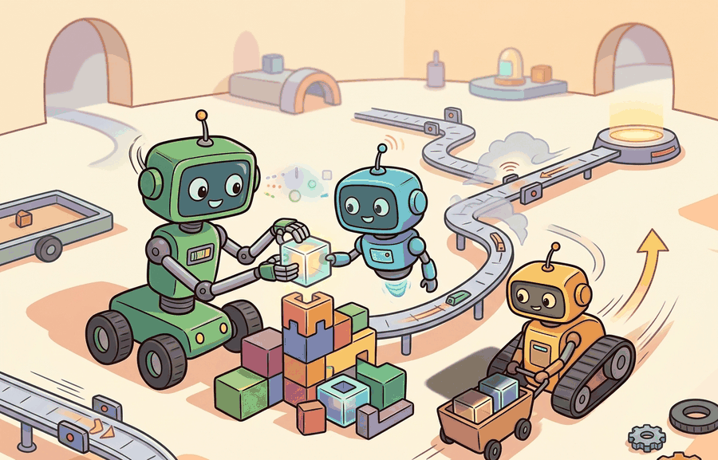

A message that never changes an action is just a robot group chat with better timestamps.
A Robot Group Chat

Cooperation, competition, communication is the coordination incentives lens for multi-agent embodied AI. Cooperation, competition, and communication determine whether agents reveal useful state, withhold information, or overload the channel with irrelevant chatter.
cooperation, competition, communication becomes useful when it is tied to a named interface, a replayable scenario, a failure diagnostic, and an artifact that records what changed in the action loop.
The key question is practical: Which variables are shared, which rewards are aligned, and which messages are worth their latency cost?
A representation earns its place when it changes the measurable action interface. In cooperation, competition, communication, the reader should keep asking which decision becomes easier, safer, or more reliable.
Theory
For Cooperation, competition, communication, the practical design rule is to make the interface inspectable before optimization begins: inputs, outputs, units, latency, bounds, and failure labels should all be visible in the saved artifact.
The mechanism in Cooperation, competition, communication is the contract between representation and action. Name what enters the module, what leaves it, which assumptions make that transformation valid, and which log would reveal a bad handoff.
Worked Example
Consider two delivery robots and one charging dock. Cooperation schedules charging before failure; competition can starve a low-battery robot; communication helps only if messages change the next action.
The hand-built fragment is roughly 12 lines and cannot model message timing. Use PettingZoo parallel environments for simultaneous moves and ROS 2 topics for real robot communication; the tools handle action dictionaries, agent IDs, and message transport while the small version keeps the reward logic inspectable.
Practical Recipe
- Write the observation, action, and success metric before choosing a model.
- Build a baseline that is simple enough to debug by inspection.
- Add the library implementation only after the baseline behavior is understood.
- Record failures as structured cases: perception error, state error, planning error, control error, or evaluation error.
- Run at least one perturbation test before trusting the result.
The common mistake in Cooperation, competition, communication is to celebrate the component score before checking the closed-loop handoff. The failure usually appears at the boundary: stale state, wrong frame, delayed action, saturated actuator, or metric that ignores the real task cost.
A useful communication study logs message content, message time, local observation, chosen action, and counterfactual no-message action. If the action would not change, the message is ceremony rather than coordination.
Active work studies learned communication, language as a coordination medium, opponent modeling, and mixed cooperative-competitive benchmarks. Vendor or demo claims should be checked against partner diversity and communication ablations.
HAPPO (Kuba et al., ICLR 2022) provides a principled trust-region update for heterogeneous cooperative agents, proving that sequential per-agent updates preserve a monotonic improvement guarantee for the joint policy. This result is relevant to communication because it establishes that improving one agent's policy given its partners' fixed communication behavior is a safe update step, which is the implicit assumption behind many learned-communication architectures that otherwise lack convergence guarantees.
Can you name the observation, state estimate, action, success metric, and most likely failure mode for cooperation, competition, communication? If not, the system boundary is still too vague.
Cooperation, competition, communication becomes useful when it is tied to a closed-loop contract for Multi-Agent Embodied AI. The contract names the participants, observations, action authority, timing budget, logging artifact, and recovery rule. Without that contract, a system can look capable in a notebook while failing the first time a partner delays, a person corrects it, or a deployment scene changes.
For Cooperation, competition, communication, separate the conceptual claim, the systems claim, and the evidence claim. A plausible mechanism, a clean interface, and a closed-loop result are different claims; the section should keep their evidence separate.
| Tool or Library | Role in the Topic | Builder Advice |
|---|---|---|
| PettingZoo | Cooperation, competition, communication | Standardize multi-agent environment interfaces and compare turn-based with parallel interaction. |
| Gymnasium | Cooperation, competition, communication | Keep single-agent baselines available before adding teammates or opponents. |
| ROS 2 | Cooperation, competition, communication | Move team messages, robot state, and safety events through typed topics and services. |
| MuJoCo | Cooperation, competition, communication | Prototype contact-rich robot interactions before running real hardware. |
| LeRobot | Cooperation, competition, communication | Reuse robot datasets and policies when team behavior depends on demonstrations. |
For Cooperation, competition, communication, the baseline and maintained-tool version should produce the same artifact schema and run on one task panel. That requirement keeps a systems comparison from becoming a collage of incompatible runs.
- Write a one-paragraph task contract with observation, action, success, and failure fields.
- Start with the smallest simulator, dataset, or wrapper that exposes the task contract faithfully.
- Run one deterministic smoke test and one perturbation test before scaling.
- Save a single result artifact containing configuration, seed, metrics, videos or traces, and failure labels.
- Compare methods only when one script evaluates them on the same task panel.
When Cooperation, competition, communication fails, avoid labeling the whole method as weak. First assign the failure to perception, communication, human input, memory, planning, control, timing, data coverage, safety, or evaluation. Then rerun one controlled perturbation that isolates the suspected cause. This pattern turns a disappointing rollout into a reusable diagnostic asset.
Agent Checklist Applied
The 42-agent production pass treats cooperation, competition, communication as a buildable system, not a definition. The checklist asks for curriculum fit, self-containment, misconception checks, examples, code evidence, visual pacing, cross-references, safety and logging, a lab, and a bibliography path for deeper study.
For Cooperation, competition, communication, connect the agent-environment boundary, Gymnasium or PettingZoo interface, RL objective, hierarchy, and evaluation artifact through one multi-agent interaction log.
A common misconception is that more communication is always better. The diagnostic question is: can the same team score be reached with fewer bits, fewer messages, or delayed communication?
Build a tiny cleanup task where agents can either broadcast every observation or send only one selected intent. Measure success, collisions, and messages per episode.
A message that never changes an action is just a robot group chat with better timestamps.
Technical Core
Cooperation, competition, communication needs a topic-native core: variables, equations or system contracts, an algorithmic procedure, an expected output, and a failure diagnosis. Figure 49.2.T summarizes the chain this section must preserve when moving from a teaching example to a real embodied system.
$u_i(a_i,a_{-i},s)=r_i(s,a_i,a_{-i})-\lambda\,c(m_i),\quad m_i\in\mathcal M,\quad \pi_i(a_i,m_i\mid o_i)$
Communication is worthwhile only when the message changes a joint action enough to justify its cost. Cooperation, competition, and communication are therefore tied by information economics: agents trade bandwidth, delay, and observability against the value of coordinated behavior or strategic concealment.
- Define the game outcome with zero messages, bounded messages, and unrestricted broadcast.
- Measure the marginal improvement in return per transmitted bit or per message slot.
- Stress the system with delayed, dropped, and adversarially corrupted messages.
- Separate cooperative gains from exploitative gains by reporting both team and per-agent utility.
| Choice | What It Buys | What It Risks |
|---|---|---|
| Broadcast state | High observability, simple debugging. | Bandwidth blowup and stale data. |
| Intent-only messages | Small message budget, faster arbitration. | Ambiguity under changing goals. |
| Learned emergent code | Compact signaling for repetitive tasks. | Opaque semantics and poor partner transfer. |
| No communication | Strong robustness and deployment simplicity. | Missed coordination opportunities and local deadlocks. |
# Compare team gain against communication cost.
results = [
{"policy": "silent", "team_return": 78, "messages": 0},
{"policy": "intent_bit", "team_return": 96, "messages": 12},
{"policy": "full_broadcast", "team_return": 99, "messages": 140},
]
baseline = results[0]["team_return"]
for row in results[1:]:
gain = row["team_return"] - baseline
gain_per_msg = round(gain / row["messages"], 3)
print(row["policy"], "gain", gain, "gain_per_message", gain_per_msg)intent_bit gain 18 gain_per_message 1.5 full_broadcast gain 21 gain_per_message 0.15
This trace says the extra 128 broadcasts buy only three additional reward points. That is often a poor systems trade, especially on real robots where messages contend with state estimation, safety traffic, and network jitter. The compact intent signal is therefore the more credible embodiment choice.
A communication scheme fails when it wins only under perfect synchronization. Always rerun the task with bounded bandwidth, clock skew, and packet loss, then check whether the same coordination policy still chooses sensible actions.
Communication is valuable when it changes the joint action under a measurable cost.
Design a method-matched experiment for Cooperation, competition, communication. Specify the environment, observation schema, action interface, metric, and one perturbation that targets the section's core assumption.
Section References
Lowe, R. et al. Multi-Agent Actor-Critic for Mixed Cooperative-Competitive Environments. NeurIPS, 2017.
Use for centralized-training, decentralized-execution baselines and communication or coordination failure analysis.
Terry, J. K. et al. PettingZoo: Gym for Multi-Agent Reinforcement Learning. NeurIPS Datasets and Benchmarks, 2021.
Use for maintained multi-agent environment interfaces and reproducible API-level examples.